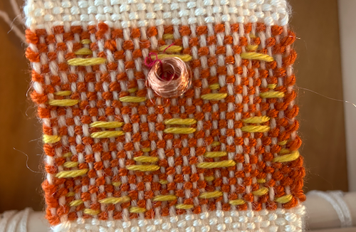
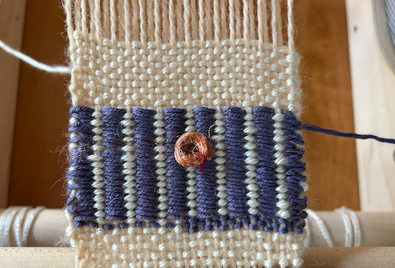

This assignment was completed on October 1, 2023
My goal for this weekly assignment was to experiment with inlay and overshot weaving techniques, as well as different types of ways to implement the metal coils into the swatch.
inlay
The materials I used in order to complete this assignment was a hardcover book (I used a sketchbook), 3 different yarns, 12" of statex conductive thread, a popsicle stick and a dowel. I used these items to create my book loom. I was inspired by my book (a sketchbook), not by the outside cover, but my drawings within. I usually draw a square of color around the background of my drawings, so I wanted to play with this within the piece I wove.
overshot
The first technique that I tried out was the typical tabby weave. I found this really important to try and get this as solid as possible, since it is the foundation of weaving. I found that it was pretty easy, but one thing that I struggled with was having the first and last warp staying the same distance as all the other warp. Next time, I'd like to try to keeping all the warp the same distance apart. Overall, I was really proud and happy with how the tabby weave turned out.
implementing coils
The second technique that I wanted to try was twisting the statex conductive thread with white yarn. I thought that the thread was too thin to incorporate by itself into the weaving because it wouldn't show on it's own, so I tried twisting it with the white thread and I thought it looked really pretty. I decided this was the way that I wanted to weave it in. I thought it gave a subtle but pretty shine to otherwise plain white yarn.
final reflection
Overall, I was really happy with how my first weaving turned out. I think that I had this expectation going into it that it would turn out perfect, which was not the case, but I am happy it didn't because now I know what to work on. In the future, I would like to work on neatening up my work, but also maintaining realistic expectations for my work. I would also like to attempt more challenging patterns and harder weaving as well.
In terms of other things that I could make a loom out of, I think you could make a big loom on the surface of a table, poster board, etc.